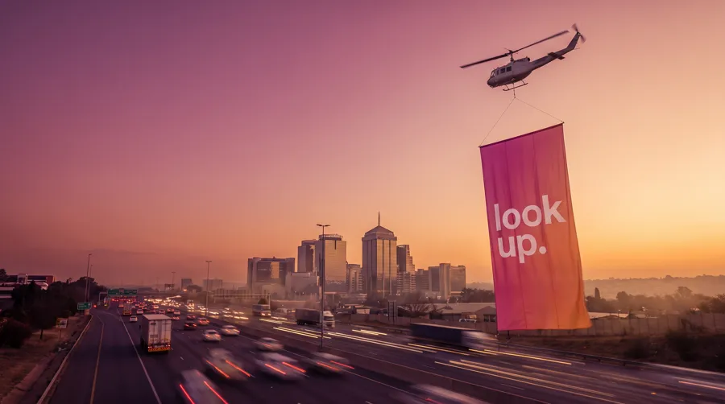
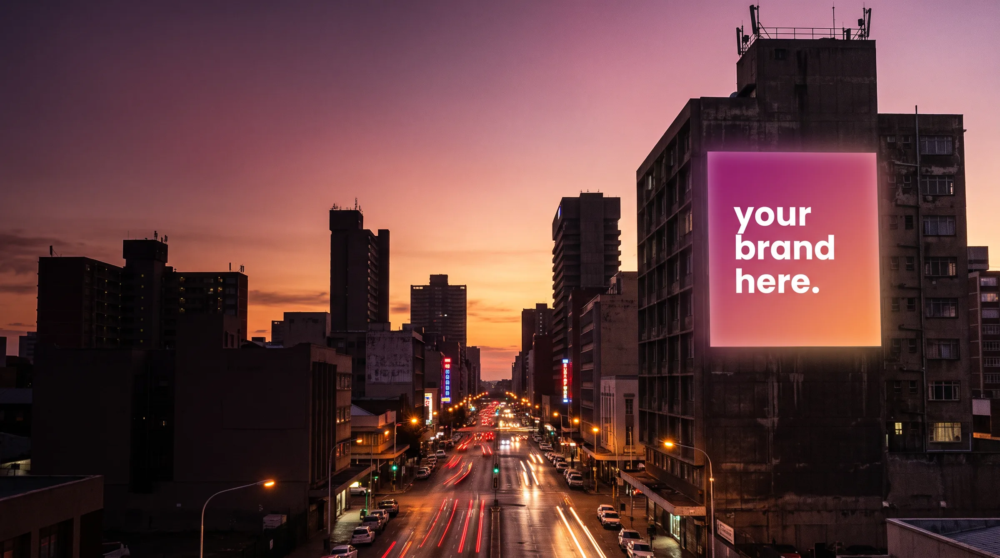
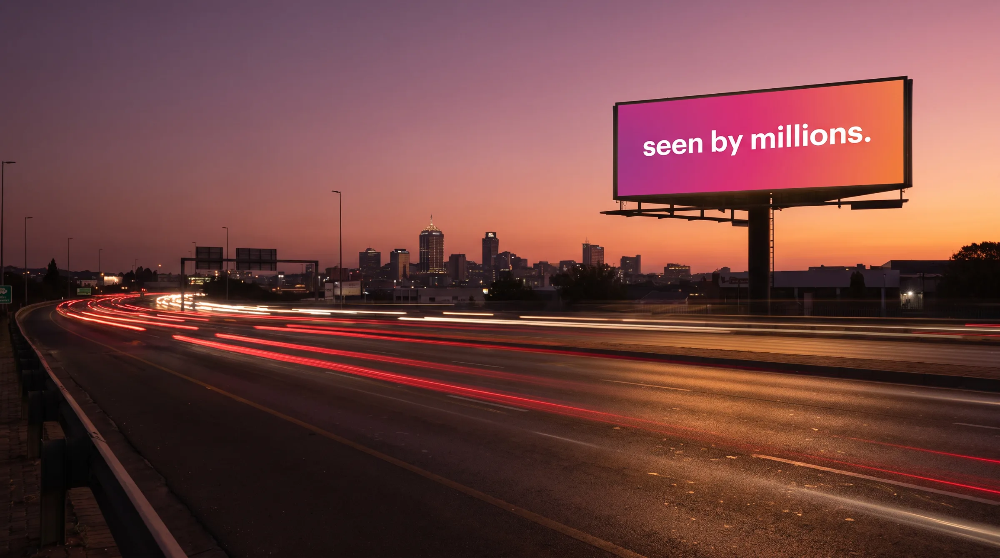

01
Helicopter banners
Giant banners flown low over highways, stadiums and beaches. The biggest single ad in the sky.

/ 18 sites · Johannesburg · East London
Outdoor advertising on South Africa's busiest routes. Iconic billboards, building wraps and skyline sites.

/ 01 · The highways
Our highway sites sit on the M1 and M2, the routes Johannesburg drives every day. Newtown – M1 South alone sees 8.1 million vehicles a month across four printable faces.

/ 02 · The city
Building wraps and skyline sites in the Joburg CBD, next to the Carlton Centre, the fashion district and the Bree Taxi Rank. Kine Tower's 40m panels are visible from the M2 and lit all night.

/ 03 · Beyond Johannesburg
Two raised A- and B-side sites in East London: Military Road on the main route from the airport into the CBD, and Fitchett Road on the North West Expressway.
/ 04 · Beyond the billboard
Launch-day spectacle to pair with your billboard campaign. Run with licensed aviation operators.

Giant banners flown low over highways, stadiums and beaches. The biggest single ad in the sky.

A branded passenger balloon held above a park or venue. A landmark for weeks, not minutes.

Branded envelopes and sunrise flights for content, launches and VIP client experiences.

Hundreds of drones drawing your logo over the city at night. Built for launches and events.
Available on request. Book well ahead: flight dates depend on weather and permits, and are confirmed with the operator.
Plan a sky activation/ The portfolio
Site photos, rates and availability are in the Site Bible. Get the latest edition.
/ Formats
Tower-top and full-height panels visible across the city and from the highway. Lit at night, impossible to miss.
Large-format wraps in Johannesburg's busiest pedestrian and fashion districts, with wrap-around faces on multiple streets.
Multi-face highway sites on the M1, M2 and key commuter routes, from Newtown to Sandton and East London.
Printing, flighting and installation handled for you, so your creative goes up on time and stays sharp.
/ About AL&S Media
AL&S Media is a Johannesburg-based outdoor advertising company. We secure high-visibility sites on the routes South Africans travel every day, then work directly with brands and agencies to get campaigns live.
You deal with the people who manage the sites: clear specifications, honest availability and a single point of contact from booking to flighting.
/ Book a site
Tell us your brand, dates and target areas. We'll come back with availability, rates and the latest Site Bible.